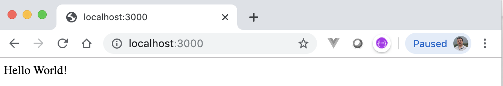

2. Nest.js培训¶
Nest.js是服务器端Node.js框架，用于构建高效，可靠和可扩展的应用程序。 由卡米尔（Kamil）建立，并得到许多知名组织和个人的支持。
2.1. Prerequisites¶
熟悉TypeScript并具有一定的JavaScript知识将帮助您从本教程中获得最大收益。 具有使用Angular构建应用程序的经验将是一个加分，但不是必需的，因为本文将为您提供有关如何轻松开始的正确指南。
您需要安装Node和npm。 建议在您的计算机上全局安装nodemon。
2.2. 安装 Nest.js¶
为了轻松构建新的Nest.js应用程序，您需要全局安装Nest CLI。 它是一个命令行界面工具，专门用于除其他外，帮助立即制作一个新的Nest.js应用程序，并提供对（内置生成器的）多个命令的访问权限，以生成不同的文件并生成结构良好的应用程序。
除了使用CLI工具之外，您还可以通过使用Git从GitHub克隆启动项目来安装新的Nest.js应用程序，但出于本教程的目的，请运行以下命令来安装Nest CLI:
npm i -g @nestjs/cli
这将使您可以访问用于安装项目的nest命令和其他特定于项目的命令。
接下来，运行以下命令以在开发文件夹中安装一个名为bookstore-nest的新项目:
nest new bookstore-nest
在安装过程中，系统将询问您几个问题，只需按照提示进行操作，然后做出相应的响应即可。
MacBook-Pro:training-nest murphy$ nest new bookstore-nest
⚡ We will scaffold your app in a few seconds..
CREATE /bookstore-nest/.prettierrc (51 bytes)
CREATE /bookstore-nest/README.md (3370 bytes)
CREATE /bookstore-nest/nest-cli.json (64 bytes)
CREATE /bookstore-nest/package.json (1697 bytes)
CREATE /bookstore-nest/tsconfig.build.json (97 bytes)
CREATE /bookstore-nest/tsconfig.json (336 bytes)
CREATE /bookstore-nest/tslint.json (426 bytes)
CREATE /bookstore-nest/src/app.controller.spec.ts (617 bytes)
CREATE /bookstore-nest/src/app.controller.ts (274 bytes)
CREATE /bookstore-nest/src/app.module.ts (249 bytes)
CREATE /bookstore-nest/src/app.service.ts (142 bytes)
CREATE /bookstore-nest/src/main.ts (208 bytes)
CREATE /bookstore-nest/test/app.e2e-spec.ts (561 bytes)
CREATE /bookstore-nest/test/jest-e2e.json (183 bytes)
? Which package manager would you ❤️ to use? npm
✔ Installation in progress... ☕
🚀 Successfully created project bookstore-nest
👉 Get started with the following commands:
$ cd bookstore-nest
$ npm run start
Thanks for installing Nest 🙏
Please consider donating to our open collective
to help us maintain this package.
🍷 Donate: https://opencollective.com/nest
MacBook-Pro:training-nest murphy$
接下来，安装完成后，将目录更改为新创建的项目，并使用以下命令启动应用程序:
// 进入项目根目录
cd bookstore-nest
// 启动应用程序
npm run start
或更妙的是，运行以下命令以将Nodemon用于项目:
// start the application using nodemon
npm run start:dev
从浏览器导航到http://localhost:3000 ，将看到Hello World！ 消息如下所示：
{kind=link}
2.3. 创建模块（module）¶
首先，您将为bookstore生成一个模块(module)。 为此，您将使用 Nest CLI 利用内置文件生成器。 运行以下命令为应用程序搭建新模块:
nest generate module books
或者
nest g mo books
上面的命令将在src文件夹中创建一个名为books的新文件夹。 同样在books文件夹中，将找到一个books.module.ts文件。
2.4. 新建 service 服务¶
由于我们暂时不会真正连接到数据库，因此请为bookstore创建一个示例模拟数据。 在books文件夹下，创建一个名为books.mock.ts的新TypeScript文件，并将以下代码粘贴到其中：
1 2 3 4 5 6 7 8 | export const BOOKS = [
{ id: 1, title: 'First book', description: "This is the description for the first book", author: 'Olususi Oluyemi' },
{ id: 2, title: 'Second book', description: "This is the description for the second book", author: 'John Barry' },
{ id: 3, title: 'Third book', description: "This is the description for the third book", author: 'Clement Wilfred' },
{ id: 4, title: 'Fourth book', description: "This is the description for the fourth book", author: 'Christian nwamba' },
{ id: 5, title: 'Fifth book', description: "This is the description for the fifth book", author: 'Chris anderson' },
{ id: 6, title: 'Sixth book', description: "This is the description for the sixth book", author: 'Olususi Oluyemi' },
];
|
接下来，创建一个服务来保存bookstore的所有逻辑。 运行以下命令以生成服务:
nest generate service books
或者
nest g s books
此命令将在./src/books文件夹中创建一个名为books.service.ts的新文件。
2.5. Get books¶
1 2 3 4 5 6 7 8 9 10 11 12 | import { Injectable } from '@nestjs/common';
import { BOOKS } from './books.mock';
import { Observable, of} from 'rxjs';
@Injectable()
export class BooksService {
getBooks(): Observable<any> {
let books = of(BOOKS);
return books;
}
}
|
注意：of(BOOKS) 和 from(BOOKS) 的区别。
- of(BOOKS) 返回全部的数组
- from(BOOKS) 返回数组的最后一条记录
2.6. Inject service into controller¶
1 2 3 4 5 6 7 8 9 10 11 12 13 14 15 | import { Controller, Get } from '@nestjs/common';
import { BooksService } from './books.service';
@Controller('books')
export class BooksController {
constructor(private booksService: BooksService) { }
@Get()
async getBooks() {
const books = await this.booksService.getBooks();
return books;
}
}
|
从浏览器导航到http://localhost:3000/books ，将看到books的全部信息。